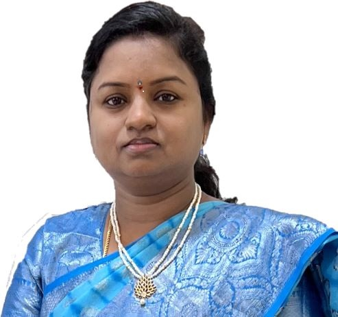

DR KANCHI LOHITHA LAKSHMI
Associate Professor
Department of Artificial Intelligence & Data Science
Email: lohitha.kanchi@vvit.net
Google Scholar ORCID SCORPUSPublications
| SNO | Title | Year | Name of Journal | Issue | Vol No | Page No | ISSN No |
|---|---|---|---|---|---|---|---|
| 1 | An Evolutionary Optimization For Multiple Sequence Alignment | 2015 | IJCSN | Issue 4 | 3 | 195-199 | 2277-5420 |
| 2 | A Study on Different Gene Expressions Using Evolutionary Optimization | 2016 | IEEE | - | - | 101-106 | 0973-7529 |
| 3 | Soft Computing Techniques for Gene Annotation | 2018 | IJLEMR | Issue 2 | 4 | 26-34 | 2455-4847 |
| 4 | An Analysis of Breast Cancer DNA Sequences Using Particle Swarm Optimization | 2018 | IJET(UAE) | Issue 4 | 7.2 | 335-338 | 10.14419/ijet.v7i4.7.20572 |
| 5 | An Analysis of Breast Cancer Gene Sequences Using Differential Evaluation | 2019 | IJSSST | Issue 4 | 7 | 35.1-35.7 | 1473-804X |
| 6 | A Hybrid Optimization Approach for Breast Cancer Gene Sequence Analysis | 2019 | JARDCS | Issue 2 | 11 | 132-41 | 1943-023X |
| 7 | Gene Sequence Analysis of Breast Cancer Using Genetic Algorithm | 2020 | Springer | - | Page 1054 | - | https://link.springer.com/chapter/10.1007/978-981-15-0135-7_16 |
| 8 | An Evolutionary Optimization Methodology for Analyzing Breast Cancer Gene Sequences | 2020 | Springer | - | 15 | - | https://doi.org/10.1007/978-3-030-46939-9_2 |
| 9 | Recognition of Emotions in Speech Using Deep CNN and RESNET | 2023 | SCI | - | - | - | https://doi.org/10.1007/s00S00-023-07969-5 |
| 10 | Machine Learning and Blockchain Model for Supplying Food Products | 2023 | IEEE | - | - | 1-17 | http://chimie-biologie.ubm.ro/carpathian_journal/index.html |
International Conferences
| SNO | Title | Year | Name of Proceedings | Institution Organized |
|---|---|---|---|---|
| 1 | A Study on Different Gene Expressions Using Evolutionary Optimization | 2016 | International Conference on Computing for Sustainable Global Development | IEEE |
| 2 | An Analysis of Breast Cancer Gene Sequences Using Differential Evolution | 2018 | International Conference on Recent Trends in Automation Technology | VVIT, Guntur |
| 3 | Gene Analysis of Breast Cancer Sequences Using Genetic Algorithm | 2019 | CCODE 2019, Springer Series: Advances in Intelligent Systems and Computing | SPMVV, Tirupati |
| 4 | An Evolutionary Optimization Methodology for Analyzing Breast Cancer Gene Sequences | 2019 | CBE'19, Springer Series: Learning and Analytics in Intelligent Systems | Sri Padmavati Mahila Visvavidyalayam, Tirupati |
National Conferences
| S.NO | Title | Year | Name of Proceedings | Name of Institution Organized | Page No | ISSN No |
|---|---|---|---|---|---|---|
| 1 | DNA Structure Prediction using Soft Computing Techniques | 2016 | NA.P. Science Congress - 2016 | Andhra Pradesh Academy of Sciences | 56-57 |
Training/Conferences/Seminars
| SNO | Year | Title | Conducted At | Other Information |
|---|---|---|---|---|
| 1 | 2013 | Information Security and Cyber Laws | VVIT | Member ID: 01233886 |
| 2 | 2016 | Instructional Design and Delivery System | NITTTR, Chennai | - |
| 3 | 2017 | Data Analytics with R | NIT, Warangal | - |
| 4 | 2018 | Applied Cryptography | NIT, Warangal and VVIT | - |
| 5 | 2019 | A Six-Day FDP on Soft Computing Techniques and Applications | VNITSW, Guntur | Conducted by Dr. Rao |
| 6 | 2019 | Course on Artificial Intelligence | VVIT | University of California, Davis |
| 7 | 2021 | Blockchain Technologies | VVIT | Organized by E&ICT Academy, NIT Warangal |
| 8 | 2021 | Recent Trends in Applications of Emerging Technologies | MVIT, Vijayawada | In association with SOLETE |